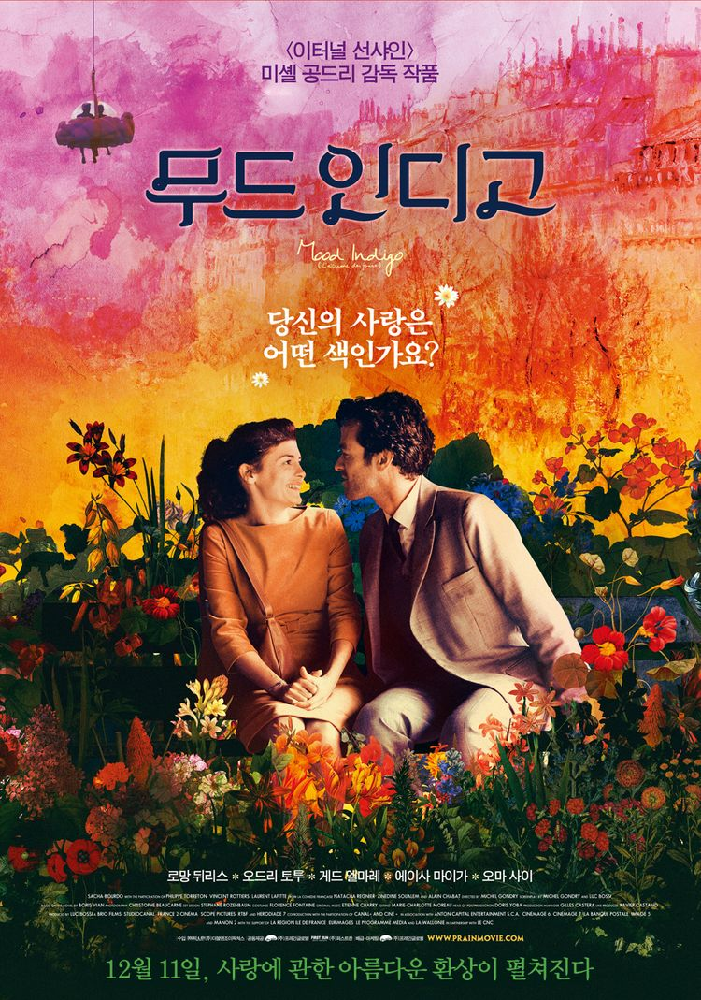

제가 추천해드릴 로맨스 영화는 '무드인디고' 입니다.
비비드 칵테일을 제조하는 피아노를 발명하여 남부럽지 않은 부와 명예를 축적한 발명가 콜랭. 그리고 철학가 장 솔 파르트에게 빠져 있는 그의 절친 시크. 콜랭은 파티에서 우연히 만난 클로에에게 마음을 뺏기고, 시크는 파르트르의 강연장에서 만난 알리즈와 사랑에 빠지게 됩니다.
꿈같은 데이트를 하며 사랑에 대한 환상을 키워나가던 콜랭은 진심을 담은 고백으로 클로에의 마음을 사로잡지만 시크는 파르트르의 물건 수집에만 열정을 쏟으며, 결혼을 꿈꾸는 알리즈의 마음을 외면합니다. 콜랭과 클로에는 마침내 아름다운 결혼식을 올리고, 알리즈는 그런 콜랭과 클로에 커플이 마냥 부럽기만 합니다.
하지만 콜랭과 클로에의 행복은 오래가지 못하고 클로에의 폐에 얼음꽃 수련이 자라고 있다는 소식을 듣게 됩니다. 클로에를 치료하기 위해 전재산을 바치고, 험난한 노동을 시작하는 콜랭. 화려했던 그의 사랑에 대한 환상은 점점 색을 잃어가고 파르트르 물건 수집을 그만둘 수 없는 시크와 그의 연인 알리즈는 서로에게 점점 지쳐갑니다. 사랑과 낭만으로 가득했던 콜랭, 클로에, 시크 그리고 알리즈의 환상은 현실의 고통과 절망 속에서 해피엔딩을 맞을 수 있을까요?
이 영화는 로맨스물이지만 판타지적 요소가 많이 들어가있습니다. 콜랭과 클로에와 데이트를 하는 장면에서는 마치 우주선같은 구름을 타고 날아다나기도 하고, 폐에 수련이 들어간 클로에의 상태를 호전하기 위해서는 많은 꽃이 필요한데 클로에가 꽃을 안으면 꽃들이 다 시들어버리는 등 현실에서 일어날 수 없는 표현들을 사용했습니다.
또한, 사랑에 빠져있을 때는 알록달록 화려한 색감들을 활용하여 화사함을 표현하였고, 클로에가 아프게 되면서 점점 힘든 상황에 닥칠수록 어둡고 우울한 색감들을 활용하여 상황에 몰입할 수 있도록 하였습니다. 로맨스는 해피엔딩이라는 공식을 깨고 세드엔딩을 맞이하며, 현실적이지 않은 표현들 속 현실적 결말을 나타내고 있습니다.
어른들의 동화라는 생각이 드는 이 영화. 흔하지 않은 로맨스 영화를 원하시는 분들께 이 영화를 추천드립니다.